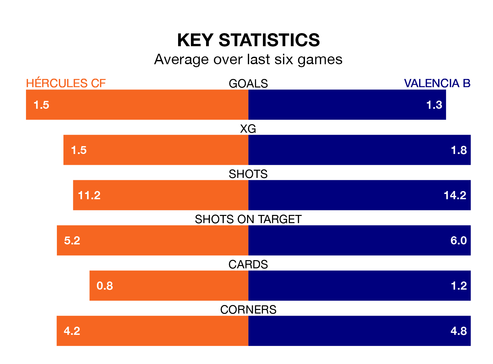

Hércules CF host Valencia B on Sunday at the Estadio José Rico Pérez in the Segunda División RFEF Group 3.
In their last league match, on March 3, Hércules drew with CE Europa 0-0 at home.
Valencia B lost, 1-0 at home against Lleida Esportiu.
With 38 goals in 25 games so far this season, Hércules are the league's third-highest scorers with 1.5 goals per game. And they are conceding fewer than average, letting in 26 goals at a rate of 1.0 per game.
Valencia B, meanwhile, are average scorers, with 1.2 goals per game. They have conceded 1.1 goals per game.
In the last 10 years, Hércules and Valencia B have played each other on 16 occasions. Hércules won six of them, Valencia B five, and they drew five times.
On average, Hércules scored 1.1 goals and Valencia B 0.9 in those matches.
Their last meeting was on October 28, when Hércules won 2-1 away.
The hosts are fifth in the table after 25 games, of which they have won 13 and drawn five, earning 44 points.
The away team are seven places behind Hércules in 12th, with eight wins and six draws putting them on 30 points.
Hércules are in mixed form in the Segunda División RFEF Group 3, with two wins and two draws from their last six games.
With four wins and two losses over that period, Valencia B's form is better – they have taken 12 points from 18, compared to the home side's eight.
Updated: 09:34 (UTC), 08/03/24